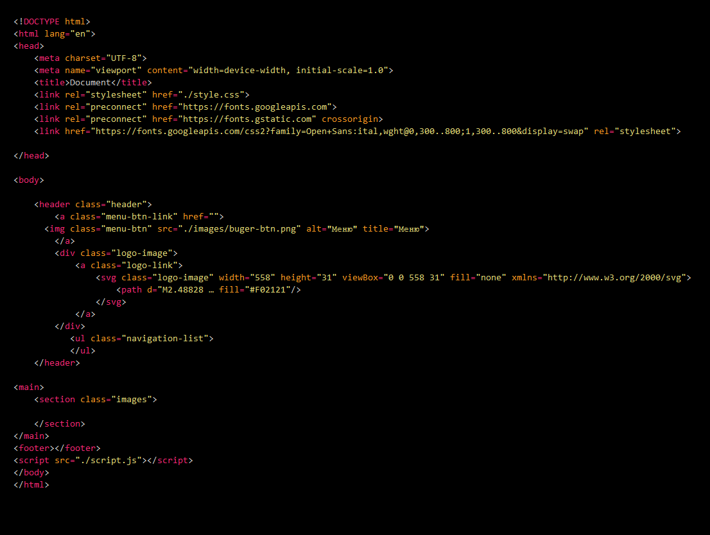
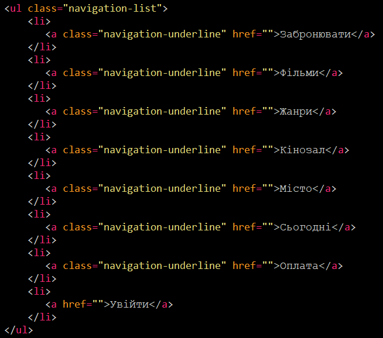
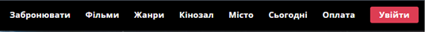
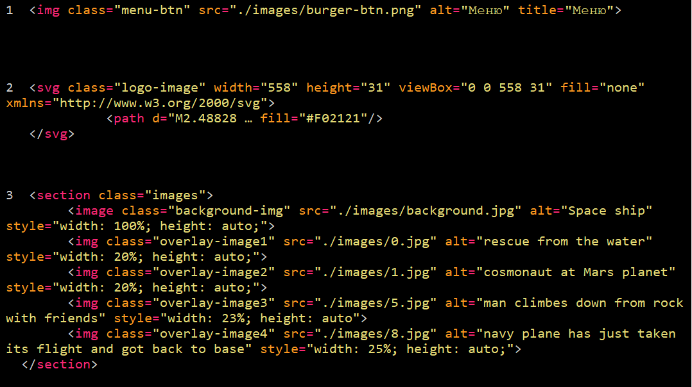

Опис предметного середовища
Бізнес-логіка
Тема: Веб-застосунок для мережі кінотеатрів
Мета проекту: надати користувачам сайту мереі кінотеатрів можливість забронювати квитки, вибрати фільм за різними параметрами, вибрати час та місце сеансу
Сценарій використання сайту для клієнтів:
Тема 1: Структура HTML-документа. Вибір предметної галузі. Робота з посиланнями, зображеннями, списками в HTML-документі
Мета: Придбати практичні навички роботи з HTML-документом, таблицями, зображеннями, посиланнями, списками, формами. Створити шаблон звітного HTML-документа для відображення результатів роботи всіх Лабораторних робіт.
Тема 2: Каскадні таблиці стилів. Селектори. Ідентифікатори. Стильове оформлення текстових елементів в HTML-документів
Мета: придбати практичні навички роботи з селекторами: тегів, класів, ідентифікаторів; списками, різноманітними властивостями кольору і фону, оформленням текстових елементів
Структура документу
Зовнішній вигляд сайту

HTML<код списку>
Виконання коду на сторінці
HTML<код зображення>
Посилання
HTML посилання - це гіперпосилання. Ми можемо натиснути на посилання і перейти до іншого документу.При наведенні миші на посилання стрілка миші перетвориться в маленьку стрілку
Список активних посилань на інформацію згідно назви кожного з посилань

Примітка: Посилання не обов'язково повинно бути текстовим. Посиланням може бути зображення або будь-який інший HTML елемент.

Вигляд посилання у вигляді бургер-кнопки, яка містить посилання на додаткове меню
CSS селектори використовуються для "пошуку" (або вибору) HTML-елементів, які ми хочемо стилізувати
Можна розділити CSS селектори на п’ять категорій:
-
Прості селектори (вибір елементів на основі імені, ідентифікатору, класу)
-
Комбінаторні селектори (вибір елементів на основі визначених відношень між ними)
-
Селектори псевдокласів (вибір елементів на основі визначеного стану)
-
Селектори псевдоелементів (вибір і стилізація частини елемента)
-
Селектори атрибутів (вибір елементів на основі атрибуту або значення атрибуту)
Селектор за тегом (Type Selector)
-
Цей селектор вибирає всі елементи HTML із зазначеним тегом.

Селектор за класом (Class Selector)
-
Цей селектор вибирає всі елементи HTML із зазначеним класом. Класи дозволяють застосовувати стилі до кількох елементів, не обов'язково одного й того ж тега. Сам клас ми прописуємо в HTML, а селектор класу у файлі CSS.
HTML

CSS